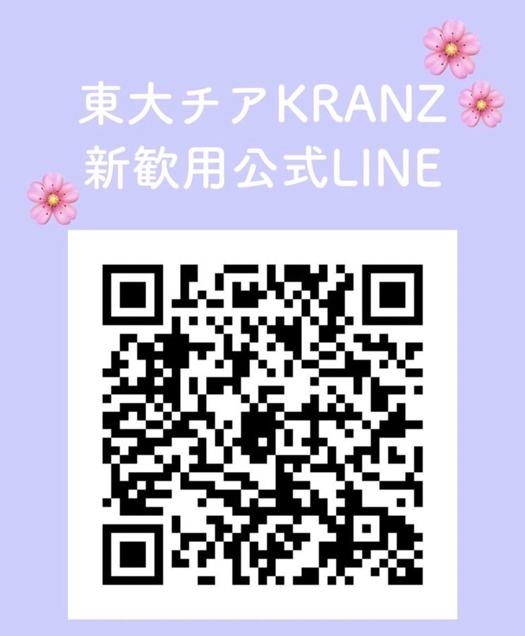

ここでは、新入生向け新歓活動を統括するオリエンテーション委員会が、主にサークルオリエンテーションに関する様々な情報について記載しております。新入生の皆さんは、以下の冊子や媒体から東京大学のサークルについて知り、新歓活動に参加することができます。有意義なキャンパスライフを送るためにも、色々なサークル・団体を覗いてみてください。
『槌音』とは
『槌音』とは、オリエンテーション委員会が発行している、新入生向けの情報冊子です。東大のほとんどのサークルを網羅したサークル紹介をはじめとして、学生生活や駒場周辺の情報、学生団体の紹介など、学生生活に役立つ情報を掲載しております。新入生には諸手続時に配布いたしましたので、ぜひ読んでみてください。
サークルオリエンテーションとは
サークルオリエンテーションとは、４月３日（日）・４日（月）に行われる、サークルなど各団体が一堂に会しての新歓活動です。各団体に部屋が割り振られておりますので、興味のある団体を訪ねてみてはいかがでしょうか。
オリエンテーション委員会ウェブサイト
オリエンテーション委員会では、新入生に役立つ情報をインターネット上でも提供しております。東京大学のサークルを検索できるサークル検索などを提供しておりますので、ぜひご活用ください。
https://www.a103.net/ori/2022/visitor/
新入生の皆さん、ご入学おめでとうございます。東京大学教養学部オリエンテーション委員会です。皆さまはこれから、様々な機会に色々な団体から新歓活動を受けることになります。興味のあるサークルや団体には積極的に加入していただきたいところですが、残念ながら、大学内でも反社会的・危険な団体がいくつか存在しています。特に新入生はこれらの団体の標的にされることが多々あり、これらの団体に軽々しく加入してしまうと、皆さまにとって将来にわたる大きな不利益になり得ることもあります。新入生の皆さまは、以下の点に十分留意して、新歓期間を過ごしてください。
新入生の個人情報のサークルなどへの提供
サークル・団体選びを有意義なものにするためにも、個人情報の自己管理を徹底してください。不要と判断した場合は、個人情報を提供する必要は一切ありませんし、一度提供した後でも、処分を要求することができます。また、新歓期用に新しい連絡先を用意することで、不必要な個人情報の流出を減らすことができます。
禁酒
本学でも以前飲酒による死亡事故が発生したように、飲酒はとても危険な行為です。また、飲酒により冷静な判断力が失われ、皆さまの不利益となる判断を強制されるリスクも高まります。そのため、新歓活動に関わる飲食の場では、年齢に関わらず飲酒はしないでください。
危険な勧誘行為
破壊的カルト集団をはじめとした危険な団体による勧誘活動が、これまで東京大学内外で行なわれてきました。新歓期には新しい環境に慣れていない新入生を狙って、そのような団体の活動が活発化します。新入生の皆さまは、せっかく始まった大学生活を棒に振らないためにも、新歓期独特の雰囲気に飲まれることなく、冷静に判断してください。
注意すべき勧誘手口
過去の事例
危険な勧誘行為が行われて大問題になった事例が存在します。ある団体は上記のような危険な勧誘行為を駆使して学生を洗脳し、団体に組み込みました。その後、本人の意思を奪って霊感商法などの反社会的活動に動員しました。この問題を受け、その団体は現在も自治活動から排除されているという異例の措置を受けています。
東京大学音楽部管弦楽団
東京大学運動会馬術部
東京大学フラメンコ舞踏団
東大トマトテニスサークル
東大長唄研究会
スポーツ愛好会バレーボールパート
東京大学運動会男子バスケットボール部
東京大学弓道部
こんにちは🌟上クラの岸空夏です。私が所属している運動会応援部チアリーダーズ(KRANZ🌸)のお知らせです✨KRANZは東大の中で唯一チアができる団体です。ダンスもやればスタンツ(組体操みたいなの)もやる、神宮で六大学野球の応援もするしアメフトとかラクロスとかの応援もする、もちろんステージもある！という風に、色々な活動を行っています✨東大女子だけで、半分以上が未経験者なので誰でも馴染みやすいです❣️興味のある方は、公式LINEや新歓PV、Instagramを見てみてね✨ もちろん私に直接連絡をくれても大丈夫です💕
